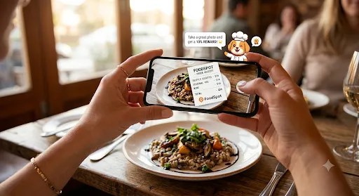
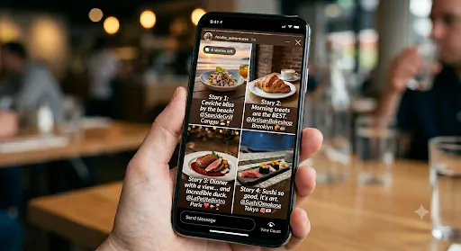

Cómo Capturar Contenido Orgánico Para Tu Negocio: Comprobante UGC

Todos Sacan Fotos de Comida. ¿Cómo Puede Tu Negocio Aprovechar Esto?
Pensá en tus clientes. Piden comida. Esperan. Llega la comida. ¿Qué es lo primero que hacen?
Sacan el teléfono y sacan una foto.
Es automático. Habitual. Ya están creando contenido para vos — compartiendo tu comida con sus seguidores, etiquetando tu ubicación, vendiéndote mejor que cualquier anuncio de Instagram.
Pero acá está el problema: ninguna app de comida tiene una cámara nativa. Ni DoorDash. Ni Uber Eats. Ni los restaurantes de Shopify. Ni las empresas multimillonarias. Todas se lo perdieron.
Nosotros no.
El Vacío en el Mercado
Pensalo. Los clientes ya sacan fotos. Los restaurantes necesitan desesperadamente marketing gratis y auténtico. Instagram y TikTok están llenos de contenido de comida. Y sin embargo, cuando los clientes piden desde tu app, tienen que saltar a otra app para compartir la foto.
Fricción. Momento perdido. El contenido nunca queda etiquetado con el nombre de tu negocio. Oportunidad de marketing perdida.
Inventamos el Comprobante UGC Para Arreglar Esto
Así funciona:
1. El cliente pide a través de tu app FoodSpot
2. Comprobante en tiempo real muestra el estado del pedido (conectado a tu KDS)
3. La comida está lista — aparece un personaje animado y pregunta: "¿Querés sacar una foto?"
4. Se abre la cámara nativa — filtros, stickers, texto, dibujo (igual que Instagram)
5. Comparten en redes sociales — el nombre de tu negocio ya está incluido
6. Vos los recompensás — puntos, descuentos, fidelización ganada

Eso es todo. Un flujo continuo. Sin saltar entre apps. Sin oportunidades de marketing perdidas.
La Matemática Es Innegable
Digamos que tenés 50 clientes por día. Solo el 10% dice que sí a la propuesta de la foto. Son 5 fotos por día.
Multiplicá eso por un mes (aproximadamente 25 días operativos): 125 fotos orgánicas y auténticas de tu comida compartidas en redes sociales.
Cada una etiquetada con el nombre de tu negocio. Cada una llegando a sus seguidores. Cada una diciendo: "Este lugar es lo suficientemente bueno para postear."
Eso es prueba social real. Eso es marketing gratis. Eso es lo que el dinero no puede comprar.

El Poder del Boca en Boca (Con Pruebas)
Acá está lo que sabemos: el 71% de las personas te visita porque un amigo subió una foto.
No por un anuncio. No por un influencer. Porque alguien en quien confían te mostró tu comida.
Comprobante UGC es el sistema que hace que esto pase automáticamente. Cada cliente feliz se convierte en un marketer. Cada foto se convierte en una referencia. Cada compartido se convierte en un nuevo cliente entrando.
Sin Influencers. Sin Anuncios. Solo Clientes Reales.
El marketing tradicional es caro. Los influencers cobran miles. Los anuncios te comen el margen. ¿Pero contenido orgánico? Es gratis. Es auténtico. Y convierte mejor que cualquier cosa que puedas pagar.
Somos la primera (y única) app de comida que construyó esto dentro de la experiencia de pedido. Cuando los clientes piden, no solo están comprando comida — se están registrando para hacer marketing de tu negocio.
Y lo van a hacer felices.
¿Listo para convertir a cada cliente en un marketer?
Probá GetQRCamera gratis — Construí tu app personalizada con marketing UGC incluido. Sin tarjeta de crédito. Sin contratos a largo plazo.